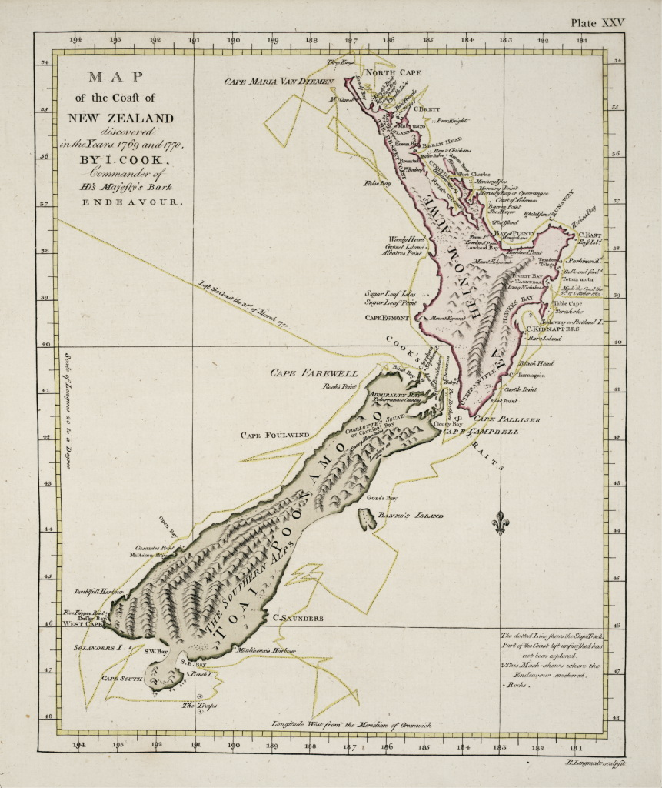

Пока ожидаем загрузки фотографий, начнём:
Мадагаска́р, официальное название — Респу́блика Мадагаска́р — островное государство в Индийском океане, расположенное на острове Мадагаскар (четвёртый по величине остров в мире) и прилегающих мелких островах у побережья Африки. Является крупнейшим в мире государством, занимающим один остров.
Но́вая Зела́ндия — государство в Полинезии. Столица — Веллингтон. Государственные языки — английский, маори и новозеландский жестовый язык. Подразделяется на 17 районов, 9 из которых расположены на Северном острове, 7 на Южном острове, и 1 на Чатемском архипелаге. Королевство Новой Зеландии включает в себя независимые в государственном управлении, но свободно ассоциированные с Новой Зеландией островные государства Острова Кука и Ниуэ, а также несамоуправляющуюся территорию Токелау и антарктическую Территорию Росса.
Мадагаска́р, официальное название — Респу́блика Мадагаска́р — островное государство в Индийском океане, расположенное на острове Мадагаскар (четвёртый по величине остров в мире) и прилегающих мелких островах у побережья Африки. Является крупнейшим в мире государством, занимающим один остров.
Площадь — 587 тыс. км², население — 28,2 млн чел. Столица — Антананариву. После распада суперконтинента Гондвана, Мадагаскар отделился от Африки примерно 160-165 миллионов лет назад, а около 65-88 миллионов лет назад — и от Индии, что обусловило развитие местных растений и животных в относительной изоляции. Более 90% местных видов не встречаются больше нигде на Земле. Разнообразные экосистемы острова и уникальный животный мир сегодня находятся под угрозой вымирания из-за быстро растущего населения.
Австронезийские переселенцы прибыли на остров на каноэ, предположительно, с Калимантана, Больших Зондских островов или Филиппин; малагасийский язык — государственный язык Мадагаскара — относится к австронезийской языковой семье и разделяет общую лексику с некоторыми языками Индонезии. Принято считать, что первые человеческие поселения на Мадагаскаре возникли между 350 годом до н. э. и 550 годом н. э., однако археологические данные позволяют предположить, что первое появление человека на острове могло иметь место до 10 тысяч лет назад. Около 1000 года н. э. к австронезийцам присоединились банту, переправившиеся через Мозамбикский пролив. Позже на Мадагаскаре осели и другие группы переселенцев. Каждая из них внесла свой вклад в культурную жизнь острова. Этнический состав населения делится на восемнадцать или более подгрупп, из которых наиболее крупным является народ мерина из центральной горной местности Высокого плато.
На малагасийском языке остров Мадагаскар называется Madagasikara ([ma.da.ɡa.si.ˈkʲa.ra]), а его жители — малагасийцами (устаревший франкофонизированный вариант — мальгаши, малаг. foko malagasy). При этом топоним Мадагаскар не имеет местного происхождения, он возник в Европе в Средние века. Так, знаменитый венецианский путешественник Марко Поло в своих записках упоминает название Madageiscar, но оно не имеет отношения к острову, а является искажённой транслитерацией названия сомалийского порта Могадишо, с которым Поло спутал остров. Похоже, что ни одно название на малагасийском языке, предшествующее Мадагасикаре, не использовалось местным населением для обозначения острова, хотя некоторые общины имели своё собственное название для территории, на которой они жили.
Площадь государства — 587040 км². Длина — около 1600 км, ширина — свыше 600 км. Центральную часть острова занимает высокогорное плато Андзафи, полого спускающееся на запад и круто обрывающееся к низменностям восточного побережья. Высшая точка острова — потухший вулкан Марумукутру (2876 м) — находится в горном массиве Царатанана, в северной части острова. В нескольких местах на острове сложился особый тип ландшафта — цинги (малаг. tsingy) — известняковые скальные образования, сплошь испещрённые вертикальными бороздами, создающими множество острых углов. Его сохранению служат заповедники «Цинги-де-Бемараха», «Цинги-де-Намурука» и др. Западное побережье гораздо более подвержено эрозии почвы, вследствие чего оно изобилует маленькими гаванями и лагунами, особенно в северной части острова. Именно здесь, в основном своём числе, обосновывались пираты на рубежах XVII-XVIII веков. На западном побережье обнаружены два крупных нефтяных месторождения — «Цимируру» и «Бемуланга».
Мадагаскар и Мавритания являются последними странами мира, не использующими десятичную валюту. Мадагаскарские ариари равняются пяти ираймбиланьям. На Мадагаскаре расположены 65 аэропортов.
Но́вая Зела́ндия — государство в Полинезии. Столица — Веллингтон. Государственные языки — английский, маори и новозеландский жестовый язык. Подразделяется на 17 районов, 9 из которых расположены на Северном острове, 7 на Южном острове, и 1 на Чатемском архипелаге. Королевство Новой Зеландии включает в себя независимые в государственном управлении, но свободно ассоциированные с Новой Зеландией островные государства Острова Кука и Ниуэ, а также несамоуправляющуюся территорию Токелау и антарктическую Территорию Росса.
Расположена на двух крупных островах (Северный и Южный) и большом количестве (приблизительно 700) прилегающих более мелких островов, в юго-западной части Тихого океана. Одной из основных особенностей Новой Зеландии является географическая изолированность. Ближайшие соседи страны: к западу — Австралия, отделённая Тасмановым морем (кратчайшее расстояние — около 1700 км); к северу — островные территории Новой Каледонии (около 1450 км), Тонга (около 1850 км) и Фиджи (около 1900 км). Первый европейский мореплаватель, побывавший у берегов Новой Зеландии, голландец Абель Тасман, назвал её «Staten Landt», думая, что на юге Новая Зеландия соединена с одноимённым островом архипелага Огненная Земля, находящимся на юге Южной Америки. Именно это название было в 1645 году изменено голландскими картографами в латинское Nova Zeelandia в честь одной из провинций Нидерландов — Зеландия (нидерл. Zeeland) и в нидерландское название Nieuw Zeeland. Позднее британский мореплаватель Джеймс Кук использовал английскую версию этого имени, New Zealand, в своих записях, и именно оно стало официальным названием страны. Основную территорию страны составляют два острова, имеющие соответствующие названия — остров Южный и остров Северный, которые разделены проливом Кука, ширина которого составляет 22,5 км в самом узком месте. Западное побережье островов омывается Тасмановым морем, остальные берега страны — Тихим океаном. Кроме двух основных островов, Новой Зеландии принадлежит около 700 островов значительно меньшей площади, большинство из которых необитаемы. Общая площадь страны составляет 268680 км². Это делает её немного меньше по своим размерам, чем Италия или Япония, но несколько больше Великобритании. Длина береговой линии Новой Зеландии составляет 15134 километра.
Рельеф Новой Зеландии представляет собой в основном крутые холмы (на Северном острове) и горы (на Южном острове). Более 75% территории страны лежит на высоте более 200 м над уровнем моря. Большинство гор Северного острова не превышают 1700 м в высоту. 19 пиков Южного острова выше 3000 м. Прибрежные зоны Северного острова представлены просторными долинами. На западном побережье Южного острова расположены фьорды. Равнины занимают около 10% территории страны.
Острова, образующие Новую Зеландию, располагаются в тихоокеанском геосинклинальном поясе между двумя литосферными плитами — тихоокеанской и австралийской. На протяжении длительных исторических периодов место разлома между двумя плитами подвергалось сложным геологическим процессам, постоянно меняющим структуру и формы земной коры. Именно поэтому, в отличие от большинства островов Тихого океана, острова Новой Зеландии образованы не только в результате вулканической активности, но и в результате сбросов и сложены из геологических пород разного состава и разного возраста. Активная тектоническая деятельность в земной коре этого региона продолжается и на современном геологическом этапе формирования нашей планеты. И результаты её заметны даже за исторически короткий срок с начала освоения островов европейцами. Так, например, в результате разрушительного землетрясения 1855 года береговая черта около Веллингтона поднялась более чем на полтора метра, а в 1931 году, также в результате сильного землетрясения около города Нейпир на водную поверхность поднялось около 9 км² суши.

Первая карта Новой Зеландии, составленная Джеймсом Куком
Новая Зеландия — одна из самых поздно заселённых территорий. Радиоуглеродный анализ, свидетельства обезлесения и вариабельность митохондриальной ДНК у маори позволяют сделать вывод о том, что первые восточные полинезийцы поселились здесь в 1250—1300 годах после продолжительных путешествий по южным тихоокеанским островам. В XI—XIV веках страна была заселена выходцами из других островов Полинезии, европейские исследователи открыли острова́ в 1642 году. Активное освоение земель Великобританией началось с 1762 года.
Ещё около 1000 лет назад, до появления на островах постоянных поселений человека, исторически полностью отсутствовали млекопитающие. Исключение составляли два вида летучих мышей и обитающие в прибрежных водах киты, Новозеландский морской лев (Phocarctos hookeri) и Новозеландский морской котик (Arctocephalus forsteri). Из представителей фауны Новой Зеландии наиболее известными являются птицы киви (Apterygiformes), ставшие национальным символом страны. Только в Новой Зеландии сохранились останки истреблённых около 500 лет назад гигантских нелетающих птиц моа (Dinornis), достигавших высоты 3,5 м. Немногим позднее, предположительно всего около 200 лет назад, был истреблён и крупнейший из известных видов орлов — орёл Хааста, имевший размах крыльев до 3 метров и весивший до 15 кг.
В районе Новой Зеландии имеются два постоянных морских течения — тёплое Восточно-Австралийское и течение Западных Ветров. Восточно-Австралийское, следуя на север и северо-восток, омывает западную часть Северного острова. Течение Западных Ветров заметно на юге, и основной поток его проходит южнее Южного острова в восточном направлении.
В 2005 году Новая Зеландия стала первой в мире страной в которой был введён углеродный налог (плата, которая взимается с компаний и организаций в зависимости от объёма выбросов углекислого газа (CO₂) и других производимых ими парниковых газов). Законодательство страны определяет около 60 типов природных территорий, подлежащих защите и сохранению.
Из-за существующей гигантской озоновой дыры над Антарктидой, в Новой Зеландии очень сильное ультрафиолетовое излучение. Как следствие, рак кожи является самой распространённой формой рака в Новой Зеландии. Усугубляется ситуация тем, что многие жители — потомки британцев, которые всегда отличались светлой кожей.